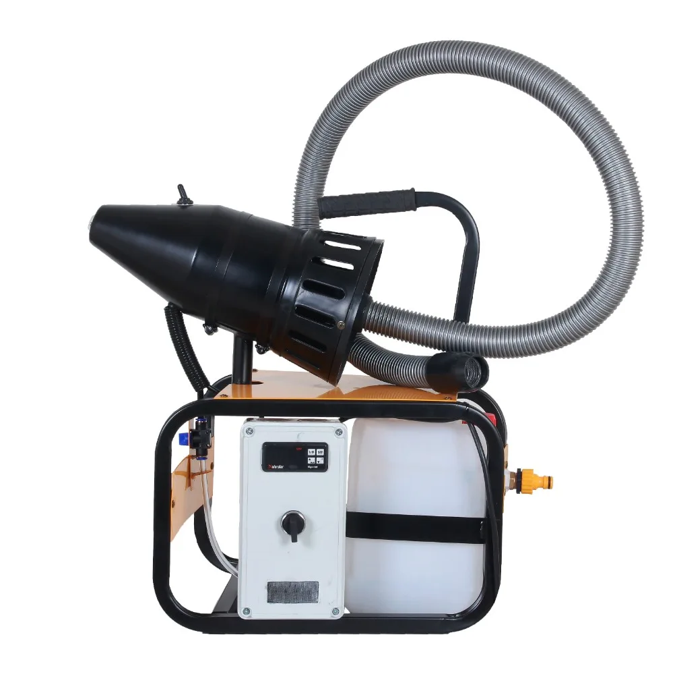

Nemlendirme · Model MXL-HGS
Duru MXL-HGS
Higrostatlı tam otomatik ULV nemlendirme, 2200 W, şamandıralı
Motor: 2200 W, 220V AC 50Hz
Tank: Şamandıralı – sınırsız (şebeke bağlantılı)
Kontrol: Higrostatlı (nem sensörlü) tam otomatik
Nem Çıkış Debisi: 0–49 l/h
Teknik Özellikler
Duru MXL-HGS — teknik tablo
| Motor | 2200 W, 220V AC 50Hz |
|---|---|
| Tank | Şamandıralı – sınırsız (şebeke bağlantılı) |
| Kontrol | Higrostatlı (nem sensörlü) tam otomatik |
| Nem Çıkış Debisi | 0–49 l/h |
| Nem Damla Çapı | 0–49 mikron |
| Kaplama Alanı | Tek noktadan 25–100 m² |
| Gövde | 20×20 profil şase, lazer kesim, elektrostatik boya |
| Ağırlık | 4.6 kg |
Neden bu model
Detaylı açıklama
Higrostatlı Nemlendirme Cihazı Nedir?
Nem sensörü (higrostat) ile tam otomatik çalışan bu higrostatlı nemlendirme cihazı, Duru ürün ailesinde Duru MXL-HGS model adıyla satılır. 2200 W ULV nem başlığı, ortamın bağıl nemini sürekli ölçer ve belirlenen değerin altına düştüğünde otomatik olarak devreye girerek 0–49 mikron aralığında ince bir sis üretir. Şamandıralı su beslemesi ve higrostat kontrolünün birleşimi sayesinde operatör müdahalesi neredeyse tamamen ortadan kalkar; cihaz istenen nem seviyesini kendi kendine korur.
Otomatik Nem Kontrolü Nerelerde Kullanılır?
Duru MXL-HGS, nem oranının dar bir bantta sabit tutulması gereken profesyonel ortamların ilk tercihidir. Mantar üretim tesislerinde %70–90 nem aralığının kesintisiz korunması, mantar veriminin ve kalitesinin doğrudan belirleyicisidir; higrostatlı yapı bu dengeyi insan hatası olmadan sürdürür. Aynı hassasiyet, soğuk hava depoları, peynir olgunlaştırma odaları, tekstil ve iplik üretim hatları, matbaa ve elektronik üretim tesisleri için de kritik önemdedir. Gece-gündüz fark etmeksizin sürekli çalışması gereken tesislerde, otomatik nem kontrolü hem iş gücü tasarrufu hem de ürün kaybının azalması anlamına gelir.
Teknik Üstünlükler: Neden Duru MXL-HGS?
Higrostat, cihazı yalnızca ihtiyaç anında çalıştırarak su ve elektrik sarfiyatını en aza indirir; bu da uzun vadede işletme maliyetini düşürür. 25–100 m² kaplama alanı, tek cihazla orta ölçekli bir mantarhanenin dengeli nemlendirilmesine imkân tanır. 20×20 profil lazer kesim şase ve elektrostatik boya, nemli ortamlarda paslanmaya karşı dayanıklılık sağlar. Şamandıralı su beslemesi kesintisiz çalışmayı garanti ederken, özel nozul ortamı ıslatmadan homojen sis üretir. 4,6 kg ağırlığındaki cihaz CE belgelidir ve metal olmayan başlığı sayesinde elektrik kaçağı riski taşımaz. Temiz su filtrasyonu, sistemin kireç ve bakteri birikiminden korunmasına yardımcı olur.
Higrostatlı Nemlendirme Cihazı Fiyatı ve Teklif Süreci
Duru MXL-HGS'nin fiyatı, ortam büyüklüğü ve otomasyon seviyesine göre belirlendiğinden sitemizde sabit fiyat listelemiyoruz. "Teklif Al" formuyla size özel bir teklif alabilir; manuel/portatif kullanım için Duru MXL ya da geniş alan için Duru DMXL modelleriyle karşılaştırabilirsiniz.
Kullanım Alanları
Bu model nerede tercih ediliyor?
Belediye
Hastane
Sera
Fabrika
Askeriye
Çiftlik
Sıkça Sorulan Sorular
Hızlı yanıtlar
Ortamın nemini sürekli ölçer; nem belirlenen değerin altına düşünce cihazı otomatik çalıştırır, hedefe ulaşınca durdurur.
Evet. Nem sensörü ve şamandıralı su beslemesi sayesinde operatör müdahalesi olmadan istenen nem seviyesini korur.
MXL-HGS higrostatlıdır ve nemi otomatik kontrol eder; standart MXL manuel veya zaman saatiyle çalışır.
Tek noktadan 25–100 m² arası ortamlar için uygundur.
Higrostat yalnızca ihtiyaç anında çalıştığından su ve elektrik sarfiyatı standart sürekli çalışan sistemlere göre daha düşüktür.